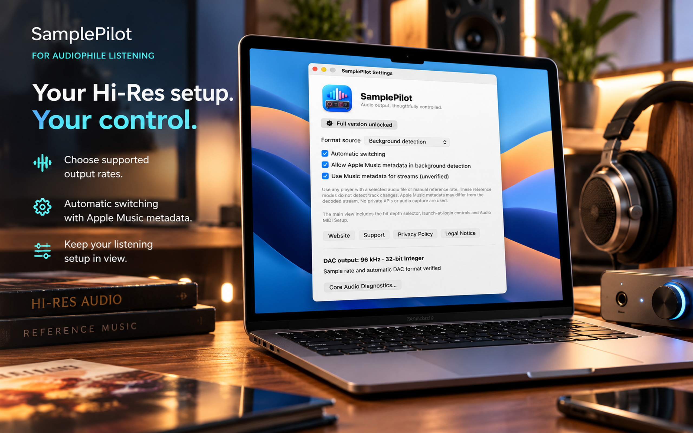

SamplePilot
SamplePilot
Live DAC Information
View the current output device, sample rate and available physical output-format information.
Take control of your Mac's audio output. Monitor your DAC, manage supported sample rates and bring clarity to your Hi-Res listening experience.
SamplePilot works quietly from your macOS menu bar, keeping your audio output information within easy reach.
macOS 26+ · 14-day trial · One-time purchase
.png)
Whether you use an external USB DAC, built-in speakers or another macOS audio output, SamplePilot helps you understand the format your Mac is actually using.
View the current output device, sample rate and available physical output-format information.
Use available Apple Music metadata to support automatic switching between compatible output rates.
Select supported sample rates yourself and verify the resulting device format.
Inspect available audio output information for built-in devices, external DACs and other supported macOS output routes.
Examine supported formats and investigate output configuration with integrated diagnostic tools.
Audio and device information is processed locally. No audio recording, advertising or analytics.

SamplePilot gives you control over supported audio output formats without turning everyday listening into a complicated technical process.
A Hi-Res music file and the actual output format of your Mac are not necessarily the same thing.
Try every SamplePilot feature free for 14 days. Explore automatic switching, manual output control and integrated Core Audio diagnostics.
After the trial, monitoring and read-only information remain available. A single in-app purchase permanently unlocks audio changes.
No subscription. No automatic charge. No advertising.
SamplePilot is an independently developed macOS utility focused on practical audio output control, transparent information and straightforward operation.
Developed by Edzart Sinning. No subscription, no advertising and no unnecessary cloud services.